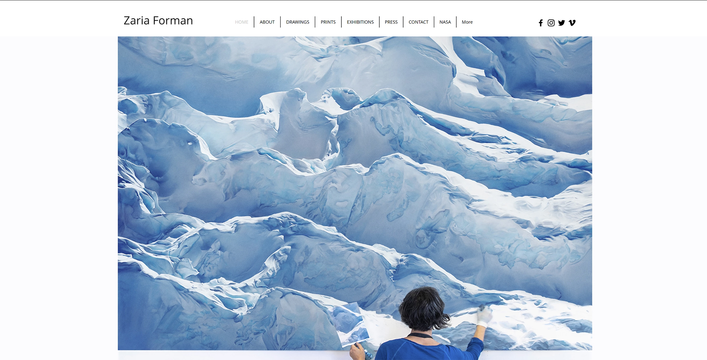
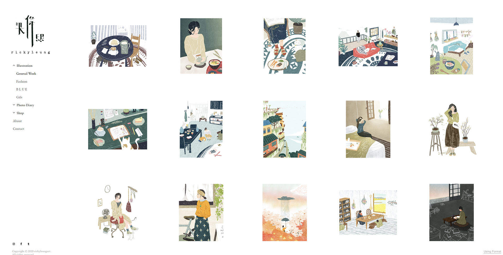
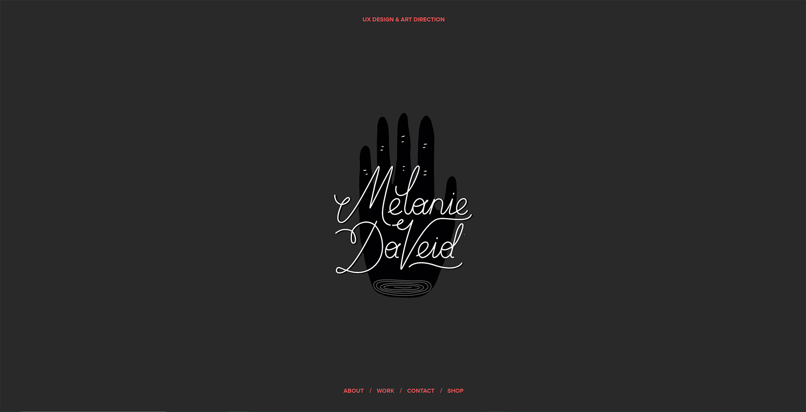
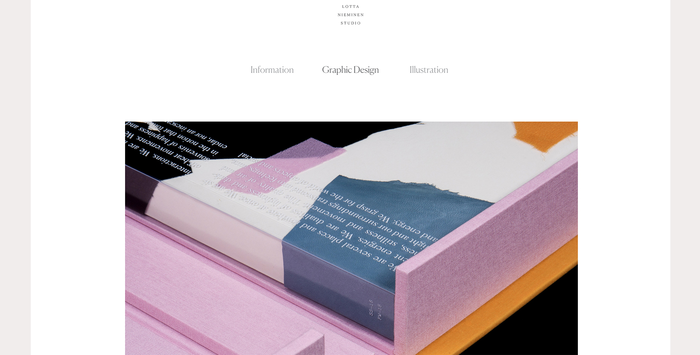
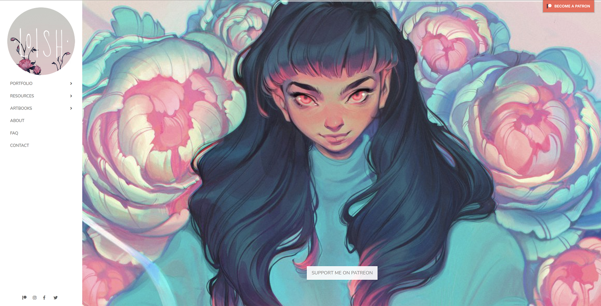

This portfolio has a simple structure and is easy to navigate. I love that the home page is locked; you cannot scroll down. All you see on the home page is a high-quality photo of the artist and her work, as well as a simple and straightforward navigation menu at the top. Everything is well organized, and nothing distracts the viewer from the art, which is the main goal of a web portfolio.

The home page of this web portfolio is an illustration gallery with a simple navigation menu on the left. I love that the background is white, and the design is simple, so nothing distracts the viewer from the art. I also like the animated logo in the upper left corner above the menu, it adds little extra touch of creativity.

This web portfolio has dramatic, bold color scheme. I love that there is a lot of negative space on the home page, so the focus is on the logo (illustration). The navigation menu is simple and easy to use. This web portfolio is essentially a single page, and the viewer can navigate the menu by scrolling or clicking the navigation menu, which will automatically scroll to the desired location. I also like the animated logo at the bottom of the page, which echoes the illustration at the beginning.

A simple, modern web portfolio that blends well with the artist's style. This web portfolio has a simple repeating organization pattern and is easy to navigate. The monochrome color scheme of the web portfolio is very clear and does not distract the viewer.

The homepage starts with an animated gallery that features the artist's work on a large scale, so the focus is on the artwork. On the left is a simple navigation menu with a logo in the top left corner. Because the work of this artist is so bright and colorful that it works best on a plain white background. The categories in the menu are well organized and easy to navigate through the website.